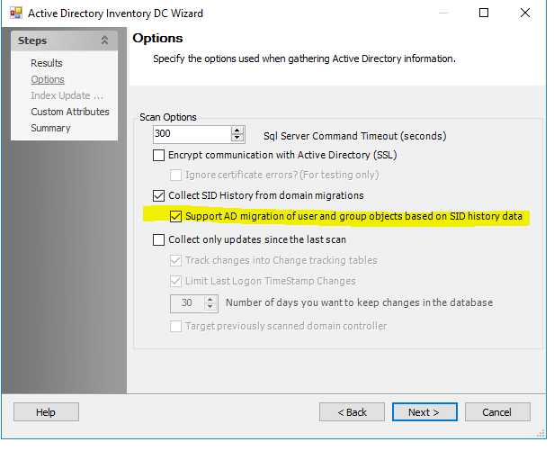

Summary:
Migrated objects not marked as deleted in differential scans
Submitted by:
Justin Giemza
Cumulative List of fixes included since Service Pack:
SA_9.0_096 - SAT-6745 - 39178 - ADI: improve effective membership calculation where possible
SA_9.0_092 - SAT-7781 - 52523 - SA_PROD_ADIscan_errors: ADI Errors
SA_9.0_028 - SAT-6678 - 39282 - Updated Open Access report for ADPA that includes information around where the permission is applied and inherited from
SA_9.0_021 - Error when trying to view ADInventory_ExtendedAttributesPivotView: FOR XML could not serialize the data for node 'NoName' because it contains a character (0x0007) which is not allowed in XML. To retrieve this data using FOR XML, convert it to binary, varbinary or image data type and use the BINARY BASE64 directive.
SA_9.0_020 - SAT-5259 - 33708 - ADInventory error 'Error while searching 'SA_ADInventory_DistinguishedNames'
Affected Versions:
9.0
Affected Module:
SA - DC - ADI
Dev Ticket:
SAT-8781 - 56740
Resolved in Version:
Private Assemblies:
Stealthbits.StealthAUDIT.DataCollectors.ADInventory.UI.dll v. 9.0.126
Stealthbits.StealthAUDIT.DataCollectors.ADInventory.dll v. 9.0.126
DC:
DCADInventory.DLL v. 9.0.126
KB Type: Bug
Issue:
When using the Active Directory Migration Tool for Exchange users were not being marked as deleted when migrated to a new domain. This new setting will track SID history and mark users as deleted from the originating domain.

Instructions:
- Unblock the hotfix zip file in the windows property dialog if an unblock button exists there.
- Close all instances of StealthAUDIT (check task manager under processes for all users)
- Exit StealthAUDIT console
- Copy and replace files from the folders in this hotfix to the corresponding folders in SA Install dir.
- Check new option in ADI data collector wizard "Support AD Migration of user and group objects based on SID history data"
https://downloads.stealthbits.com/access/files/SAHotFixes/9.0/SA_9.0_100.zip